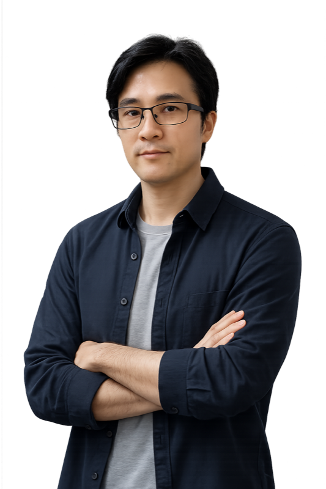

嗨，我是 Ossgo，一位擁有超過 15 年經驗的全端工程師。從 2009 年開始接觸 iOS 開發，一路走來累積了 Objective-C、Swift、Flutter、React Native、Next.js 等多元的技術經驗，也參與過後端 API 的開發工作。這些年做過的專案類型很廣——從藍牙健身設備、AI 護理監控、到庫存管理與銷售前台系統，涵蓋多種產業與應用場景。近期也將 AI 工具融入開發流程，搭配 Claude Code 提升工作效率與程式品質。自 2019 年起全面轉為遠端工作，配合過多家公司與團隊，熟悉 Scrum 敏捷開發流程，擅長非同步溝通與自主管理。目前開放接案與遠端全職機會，如果你有想法想聊聊，歡迎隨時聯繫！